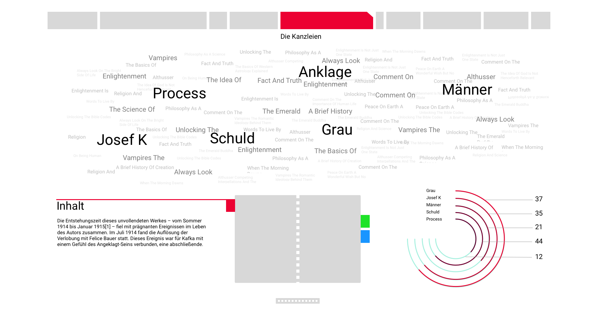
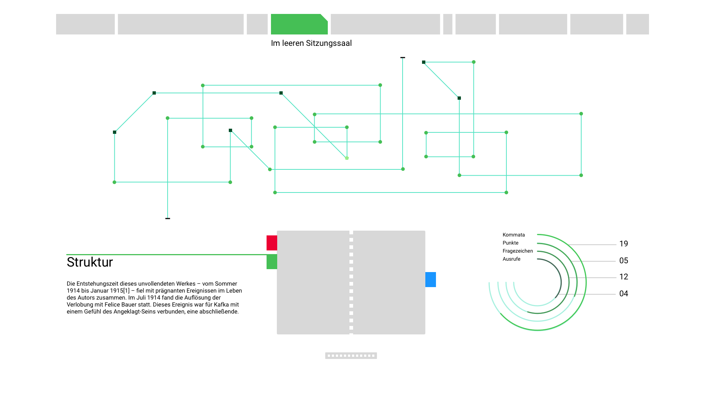
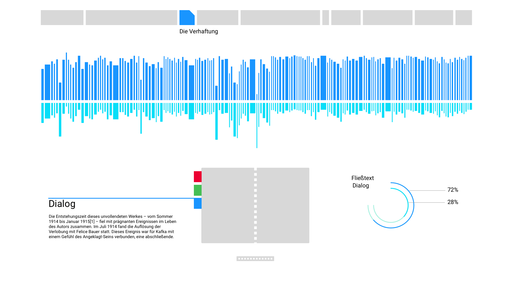

The system calculates multiple layers of cross-referenced Regular Expression
algorithms on a whole book in real-time. This allows the user to get information about different
narrative styles, the structural architecture of a book or quantitative insights on the plain content.
The navigation is based on a Book Replica and a touch-sensitive potentiometer. The Book Replica is used to
cycle through the three categories (narrative, structure, content). With the potentiometer it is possible to
scroll through each chapter of the book in real-time.
The narrative section of BOTUI calculates the relation of dialogue and running text. The user gets an
impression on how descriptive of dialogue-driven the current chapter of the book is.

The structure section of BOTUI calculates correlations between sentence-lenghts and diffenrent punctuation
marks
like commata, exclamation mark, question mark and period. The green line represents the actual reading process
of the algorithm. As soon as it encounters a punctuation, BOTUI will turn in a predefined angle. This way the
user gets a relative impression of the author's writing stlye. It is important to mention that relative data
analysis delivers imagery which is comparable to other books. It is not gernerated to display specific data.

The content section of BOTUI delivers insights about the actual content of the book. All words of the chapter
are
visualised sorted by their frequency of use. By eliminating conjunctions and some testing with different books
the
meaning of each chapter could be recognized.
